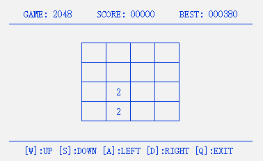
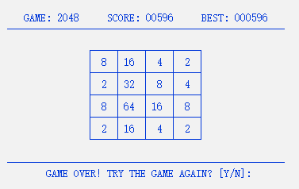

大一夏学期暑假c语言实训作业 简述 程序将使用windows平台,采用预编译(条件编译)的形式防止重编译,使用二维数组、键盘读取、生成随机种子、光标位置控制等知识点实现2048游戏的完整功能,需要控制所有方块向同一个方向运动,两个相同数字的方块撞在一起之后合并成为他们的和,每次操作之后会在空白的方格处随机生成一个2或者4(生成2的概率要大一些）,最终得到一个“2048”的方块就算胜利.
核心算法（理论知识这部分是引用了网上的资料） 方块的移动和合并 把游戏数字面板抽象成4行4列的二维数组a[4][4]，值为0的位置表示空方块，其他表示对应数字方块。把每一行同等对待，只研究一行的移动和合并算法，然后可以通过遍历行来实现所有行的移动合并算法。在一行中，用b[4]表示一行的一维数组，使用两个下标变量来遍历列项，这里使用j和k，其中j总在k的后面，用来寻找k项后面第一个不为0的数字，而k项用于表示当前待比较的项，总是和j项之间隔着若干个数字0，或者干脆紧挨着。
不失一般性，考虑往左滑动时，初始情况下j等于1，而k等于0，接着判断j项数字是否大于0，若是，则判断j项和k项数字的关系，分成3种情况处理，分别是（合并）P1: b[k]==b[j]，（移动）P2: b[k]==0和（碰撞）P3: b[k]!=0且b[k]!=b[j]；若否，则j自加1，然后继续寻找k项后面第一个不为0的数字。
其中P1，P2和P3分别对应如下：
（合并）P1：b[k]==b[j]，则b[k] = 2 * b[k]（说明两数合并了），且b[j] = 0（合并之后要将残留的j项值清零），接着k自加1，然后进行下一次循环。
（移动）P2：b[k]==0，则表示b[j]之前全是空格子，此时直接移动b[j]到k的位置，也就是b[k] = b[j]，然后b[j] = 0（移动后将残留的j项值清零），接着k值不变，然后进行下一次循环。
（碰撞）P3：b[k]!=0且b[k]!=b[j]，则表示两数不相等且都不为0，此时将两数靠在一起，也就是b[k+1] = b[j]。接着分两种小情况，若j!=k+1，则b[j] = 0（移动后将残留的j项值清零）；若否，则表示两数原先就靠在一起，则不进行特殊处理（相当于未移动）。接着k自加1，然后进行下一次循环。
判断游戏是否结束 遍历二维数组，看是否存在横向和纵向两个相邻的元素相等，若存在，则游戏不结束，若不存在，则游戏结束。
生成随机数 根据生成的随机数，对一定的值进行取模，达到生成一定概率的数。在本游戏中，设定4出现的概率为1/10，于是可以利用系统提供的随机数函数生成一个数，然后对10取余，得到的数若大于0则在游戏面板空格处生成一个2，若余数等于0，则生成4。在选择将在哪一个空格出生成数的时候，也是根据系统提供的随机函数生成一个数，然后对空格数取余，然后在第余数个空格出生成数字。
绘制界面 利用系统提供的控制台界面清屏功能，达到刷新界面的效果，利用控制制表符位置，达到绘制游戏数字面板的效果。
计算得分 两块带数字的方格合并后的数字为合并的得分，一次上下左右移动后游戏面板上所有合并的得分总和为一次移动的得分，多次移动的得分进行累加作为当前总得分。
如果当前总得分（SCORE）超过最高分（BEST），则最高分被改写为当前总得分，并存储下来，下次启动游戏时会自动载入本机存储的最高分。
各部分实现 主函数中定义了游戏的大体框架.1 2 3 4 5 6 7 int main (int argc, char *argv[]) system("color F1" ); init_game(); loop_game(); release_game(0 ); return 0 ; }
读取键盘操作 1 2 3 4 5 6 7 8 9 10 11 int read_keyboard () #ifdef _WIN32 return _getch(); #else int key_code; if (read (0 , &key_code, 1 ) < 0 ) { return -1 ; } return key_code; #endif }
开始游戏 1 2 3 4 5 6 7 8 9 10 11 12 13 14 15 16 17 18 19 20 21 22 23 24 25 26 27 28 29 30 31 32 33 34 35 36 37 38 39 40 41 42 43 44 45 46 47 48 49 50 51 52 53 54 55 56 57 58 59 60 61 62 63 64 65 66 67 68 69 70 71 72 73 74 75 76 77 78 79 80 81 82 83 84 85 86 87 88 89 90 91 92 93 94 95 96 void loop_game () while (1 ) { int cmd = read_keyboard(); if (if_prepare_exit) { if (cmd == 'y' || cmd == 'Y' ) { clear_screen(); return ; } else if (cmd == 'n' || cmd == 'N' ) { if_prepare_exit = 0 ; refresh_show(); continue ; } else { continue ; } } if (if_game_over) { if (cmd == 'y' || cmd == 'Y' ) { reset_game(); continue ; } else if (cmd == 'n' || cmd == 'N' ) { clear_screen(); return ; } else { continue ; } } if_need_add_num = 0 ; #ifdef _WIN32 switch (cmd) { case 'a' : case 75 :move_left(); break ; case 's' : case 80 :move_down(); break ; case 'w' : case 72 :move_up(); break ; case 'd' : case 77 :move_right(); break ; case 'q' : case 27 :if_prepare_exit = 1 ; break ; default :continue ; } #else switch (cmd) { case 'a' : case KEY_CODE_LEFT:move_left(); break ; case 's' : case KEY_CODE_DOWN:move_down(); break ; case 'w' : case KEY_CODE_UP:move_up(); break ; case 'd' : case KEY_CODE_RIGHT:move_right(); break ; case KEY_CODE_QUIT:if_prepare_exit = 1 ; break ; default :continue ; } #endif if (score > best) { best = score; FILE *fp = fopen(config_path, "w" ); if (fp) { fwrite(&best, sizeof (best), 1 , fp); fclose(fp); } } if (if_need_add_num) { add_rand_num(); refresh_show(); } else if (if_prepare_exit) { refresh_show(); } } }
程序运行图:

重置游戏 1 2 3 4 5 6 7 8 9 10 11 12 13 14 15 16 17 18 19 20 21 22 void reset_game () score = 0 ; if_need_add_num = 1 ; if_game_over = 0 ; if_prepare_exit = 0 ; int n = rand() % 16 ; int i; for (i = 0 ; i < 4 ; ++i) { int j; for (j = 0 ; j < 4 ; ++j) { board[i][j] = (n-- == 0 ? 2 : 0 ); } } add_rand_num(); refresh_show(); }
生成随机数 1 2 3 4 5 6 7 8 9 10 11 12 13 14 15 void add_rand_num () srand((unsigned int ) time(0 )); int n = rand() % get_null_count(); int i; for (i = 0 ; i < 4 ; ++i) { int j; for (j = 0 ; j < 4 ; ++j) { if (board[i][j] == 0 && n-- == 0 ) { board[i][j] = (rand() % 10 ? 2 : 4 ); return ; } } } }
游戏结束 1 2 3 4 5 6 7 8 9 10 11 12 13 14 void check_game_over () int i; for (i = 0 ; i < 4 ; ++i) { int j; for (j = 0 ; j < 3 ; ++j) { if (board[i][j] == board[i][j + 1 ] || board[j][i] == board[j + 1 ][i]) { if_game_over = 0 ; return ; } } } if_game_over = 1 ; }
程序运行图:

上下左右的移动(这里只举例左移,其他三种移动方式只有遍历不同) 1 2 3 4 5 6 7 8 9 10 11 12 13 14 15 16 17 18 19 20 21 22 23 24 25 26 27 28 29 30 31 32 void move_left () int i; for (i = 0 ; i < 4 ; ++i) { int j, k; for (j = 1 , k = 0 ; j < 4 ; ++j) { if (board[i][j] > 0 ) { if (board[i][k] == board[i][j]) { score += board[i][k++] *= 2 ; board[i][j] = 0 ; if_need_add_num = 1 ; } else if (board[i][k] == 0 ) { board[i][k] = board[i][j]; board[i][j] = 0 ; if_need_add_num = 1 ; } else { board[i][++k] = board[i][j]; if (j != k) { board[i][j] = 0 ; if_need_add_num = 1 ; } } } } } }
清屏(减少闪烁) 1 2 3 4 5 6 7 void clear_screen () COORD pos = {0 , 0 }; SetConsoleCursorPosition(GetStdHandle(STD_OUTPUT_HANDLE), pos); CONSOLE_CURSOR_INFO info = {1 , 0 }; SetConsoleCursorInfo(GetStdHandle(STD_OUTPUT_HANDLE), &info); }
刷新界面 1 2 3 4 5 6 7 8 9 10 11 12 13 14 15 16 17 18 19 20 21 22 23 24 25 26 27 28 29 30 31 32 33 34 35 36 37 38 39 40 41 42 43 44 45 46 47 48 49 50 51 52 53 54 55 56 57 58 59 60 61 62 63 64 65 66 67 void refresh_show () clear_screen(); printf ("\n\n\n\n" ); printf (" GAME: 2048 SCORE: %05d BEST: %06d\n" , score, best); printf (" --------------------------------------------------" ); printf ("\n\n ┌────┬────┬────┬────┐\n" ); int i; for (i = 0 ; i < 4 ; ++i) { printf (" │" ); int j; for (j = 0 ; j < 4 ; ++j) { if (board[i][j] != 0 ) { if (board[i][j] < 10 ) { printf (" %d │" , board[i][j]); } else if (board[i][j] < 100 ) { printf (" %d │" , board[i][j]); } else if (board[i][j] < 1000 ) { printf (" %d│" , board[i][j]); } else if (board[i][j] < 10000 ) { printf ("%4d│" , board[i][j]); } else { int n = board[i][j]; int k; for (k = 1 ; k < 20 ; ++k) { n = n >> 1 ; if (n == 1 ) { printf ("2^%02d│" , k); break ; } } } } else printf (" │" ); } if (i < 3 ) { printf ("\n ├────┼────┼────┼────┤\n" ); } else { printf ("\n └────┴────┴────┴────┘\n" ); } } printf ("\n" ); printf (" --------------------------------------------------\n" ); printf (" [W]:UP [S]:DOWN [A]:LEFT [D]:RIGHT [Q]:EXIT" ); if (get_null_count() == 0 ) { check_game_over(); if (if_game_over) { printf ("\r GAME OVER! TRY THE GAME AGAIN? [Y/N]: \b\b\b\b" ); CONSOLE_CURSOR_INFO info = {1 , 1 }; SetConsoleCursorInfo(GetStdHandle(STD_OUTPUT_HANDLE), &info); } } if (if_prepare_exit) { printf ("\r DO YOU REALLY WANT TO QUIT THE GAME? [Y/N]: \b\b" ); CONSOLE_CURSOR_INFO info = {1 , 1 }; SetConsoleCursorInfo(GetStdHandle(STD_OUTPUT_HANDLE), &info); } fflush(0 ); }
初始化游戏 1 2 3 4 5 6 7 8 9 10 11 12 13 14 15 16 17 18 19 20 21 22 23 24 25 26 27 28 29 30 31 32 33 34 void init_game () system("cls" ); char m_lpszDefaultDir[MAX_PATH]; char szDocument[MAX_PATH] = {0 }; memset (m_lpszDefaultDir, 0 , _MAX_PATH); LPITEMIDLIST pidl = NULL ; SHGetSpecialFolderLocation(NULL , CSIDL_LOCAL_APPDATA, &pidl); if (pidl && SHGetPathFromIDList(pidl, szDocument)) { GetShortPathName(szDocument, m_lpszDefaultDir, _MAX_PATH); } sprintf (config_path, "%s\\2048" , m_lpszDefaultDir); if (_access(config_path, 0 ) == -1 ) { _mkdir(config_path); } sprintf (config_path, "%s\\2048\\2048.dat" , m_lpszDefaultDir); FILE *fp = fopen(config_path, "r" ); if (fp) { fread(&best, sizeof (best), 1 , fp); fclose(fp); } else { best = 0 ; fp = fopen(config_path, "w" ); if (fp) { fwrite(&best, sizeof (best), 1 , fp); fclose(fp); } } reset_game(); }
退出游戏 1 2 3 4 5 6 void release_game (int signal) system("cls" ); CONSOLE_CURSOR_INFO info = {1 , 1 }; SetConsoleCursorInfo(GetStdHandle(STD_OUTPUT_HANDLE), &info); exit (0 ); }
完整源代码 1 2 3 4 5 6 7 8 9 10 11 12 13 14 15 16 17 18 19 20 21 22 23 24 25 26 27 28 29 30 31 32 33 34 35 36 37 38 39 40 41 42 43 44 45 46 47 48 49 50 51 52 53 54 55 56 57 58 59 60 61 62 63 64 65 66 67 68 69 70 71 72 73 74 75 76 77 78 79 80 81 82 83 84 85 86 87 88 89 90 91 92 93 94 95 96 97 98 99 100 101 102 103 104 105 106 107 108 109 110 111 112 113 114 115 116 117 118 119 120 121 122 123 124 125 126 127 128 129 130 131 132 133 134 135 136 137 138 139 140 141 142 143 144 145 146 147 148 149 150 151 152 153 154 155 156 157 158 159 160 161 162 163 164 165 166 167 168 169 170 171 172 173 174 175 176 177 178 179 180 181 182 183 184 185 186 187 188 189 190 191 192 193 194 195 196 197 198 199 200 201 202 203 204 205 206 207 208 209 210 211 212 213 214 215 216 217 218 219 220 221 222 223 224 225 226 227 228 229 230 231 232 233 234 235 236 237 238 239 240 241 242 243 244 245 246 247 248 249 250 251 252 253 254 255 256 257 258 259 260 261 262 263 264 265 266 267 268 269 270 271 272 273 274 275 276 277 278 279 280 281 282 283 284 285 286 287 288 289 290 291 292 293 294 295 296 297 298 299 300 301 302 303 304 305 306 307 308 309 310 311 312 313 314 315 316 317 318 319 320 321 322 323 324 325 326 327 328 329 330 331 332 333 334 335 336 337 338 339 340 341 342 343 344 345 346 347 348 349 350 351 352 353 354 355 356 357 358 359 360 361 362 363 364 365 366 367 368 369 370 371 372 373 374 375 376 377 378 379 380 381 382 383 384 385 386 387 388 389 390 391 392 393 394 395 396 397 398 399 400 401 402 403 404 405 406 407 408 409 410 411 412 413 414 415 416 417 418 419 420 421 422 423 424 425 426 427 428 429 430 431 432 433 434 435 436 437 438 439 440 441 442 443 444 445 446 447 448 449 450 451 452 453 454 455 456 457 458 459 460 461 462 463 464 465 466 467 468 469 470 471 472 473 474 475 476 477 #include <time.h> /* 包含设定随机数种子所需要的time()函数 */ #include <stdio.h> /* 包含C的IO读写功能 */ #include <stdlib.h> /* 包含C标准库的功能 */ #ifdef _WIN32 #include <conio.h> #include <io.h> #include <direct.h> #include <Shlobj.h> #else #define KEY_CODE_UP 0x41 #define KEY_CODE_DOWN 0x42 #define KEY_CODE_LEFT 0x44 #define KEY_CODE_RIGHT 0x43 #define KEY_CODE_QUIT 0x71 #endif static char config_path[4096 ] = {0 }; static void init_game () static void loop_game () static void reset_game () static void release_game (int signal) static int read_keyboard () static void move_left () static void move_right () static void move_up () static void move_down () static void add_rand_num () static void check_game_over () static int get_null_count () static void clear_screen () static void refresh_show () static int board[4 ][4 ]; static int score; static int best; static int if_need_add_num; static int if_game_over; static int if_prepare_exit; int main (int argc, char *argv[]) system("color F1" ); init_game(); loop_game(); release_game(0 ); return 0 ; } int read_keyboard () #ifdef _WIN32 return _getch(); #else int key_code; if (read (0 , &key_code, 1 ) < 0 ) { return -1 ; } return key_code; #endif } void loop_game () while (1 ) { int cmd = read_keyboard(); if (if_prepare_exit) { if (cmd == 'y' || cmd == 'Y' ) { clear_screen(); return ; } else if (cmd == 'n' || cmd == 'N' ) { if_prepare_exit = 0 ; refresh_show(); continue ; } else { continue ; } } if (if_game_over) { if (cmd == 'y' || cmd == 'Y' ) { reset_game(); continue ; } else if (cmd == 'n' || cmd == 'N' ) { clear_screen(); return ; } else { continue ; } } if_need_add_num = 0 ; #ifdef _WIN32 switch (cmd) { case 'a' : case 75 :move_left(); break ; case 's' : case 80 :move_down(); break ; case 'w' : case 72 :move_up(); break ; case 'd' : case 77 :move_right(); break ; case 'q' : case 27 :if_prepare_exit = 1 ; break ; default :continue ; } #else switch (cmd) { case 'a' : case KEY_CODE_LEFT:move_left(); break ; case 's' : case KEY_CODE_DOWN:move_down(); break ; case 'w' : case KEY_CODE_UP:move_up(); break ; case 'd' : case KEY_CODE_RIGHT:move_right(); break ; case KEY_CODE_QUIT:if_prepare_exit = 1 ; break ; default :continue ; } #endif if (score > best) { best = score; FILE *fp = fopen(config_path, "w" ); if (fp) { fwrite(&best, sizeof (best), 1 , fp); fclose(fp); } } if (if_need_add_num) { add_rand_num(); refresh_show(); } else if (if_prepare_exit) { refresh_show(); } } } void reset_game () score = 0 ; if_need_add_num = 1 ; if_game_over = 0 ; if_prepare_exit = 0 ; int n = rand() % 16 ; int i; for (i = 0 ; i < 4 ; ++i) { int j; for (j = 0 ; j < 4 ; ++j) { board[i][j] = (n-- == 0 ? 2 : 0 ); } } add_rand_num(); refresh_show(); } void add_rand_num () srand((unsigned int ) time(0 )); int n = rand() % get_null_count(); int i; for (i = 0 ; i < 4 ; ++i) { int j; for (j = 0 ; j < 4 ; ++j) { if (board[i][j] == 0 && n-- == 0 ) { board[i][j] = (rand() % 10 ? 2 : 4 ); return ; } } } } int get_null_count () int n = 0 ; int i; for (i = 0 ; i < 4 ; ++i) { int j; for (j = 0 ; j < 4 ; ++j) { board[i][j] == 0 ? ++n : 1 ; } } return n; } void check_game_over () int i; for (i = 0 ; i < 4 ; ++i) { int j; for (j = 0 ; j < 3 ; ++j) { if (board[i][j] == board[i][j + 1 ] || board[j][i] == board[j + 1 ][i]) { if_game_over = 0 ; return ; } } } if_game_over = 1 ; } void move_left () int i; for (i = 0 ; i < 4 ; ++i) { int j, k; for (j = 1 , k = 0 ; j < 4 ; ++j) { if (board[i][j] > 0 ) { if (board[i][k] == board[i][j]) { score += board[i][k++] *= 2 ; board[i][j] = 0 ; if_need_add_num = 1 ; } else if (board[i][k] == 0 ) { board[i][k] = board[i][j]; board[i][j] = 0 ; if_need_add_num = 1 ; } else { board[i][++k] = board[i][j]; if (j != k) { board[i][j] = 0 ; if_need_add_num = 1 ; } } } } } } void move_right () int i; for (i = 0 ; i < 4 ; ++i) { int j, k; for (j = 2 , k = 3 ; j >= 0 ; --j) { if (board[i][j] > 0 ) { if (board[i][k] == board[i][j]) { score += board[i][k--] *= 2 ; board[i][j] = 0 ; if_need_add_num = 1 ; } else if (board[i][k] == 0 ) { board[i][k] = board[i][j]; board[i][j] = 0 ; if_need_add_num = 1 ; } else { board[i][--k] = board[i][j]; if (j != k) { board[i][j] = 0 ; if_need_add_num = 1 ; } } } } } } void move_up () int i; for (i = 0 ; i < 4 ; ++i) { int j, k; for (j = 1 , k = 0 ; j < 4 ; ++j) { if (board[j][i] > 0 ) { if (board[k][i] == board[j][i]) { score += board[k++][i] *= 2 ; board[j][i] = 0 ; if_need_add_num = 1 ; } else if (board[k][i] == 0 ) { board[k][i] = board[j][i]; board[j][i] = 0 ; if_need_add_num = 1 ; } else { board[++k][i] = board[j][i]; if (j != k) { board[j][i] = 0 ; if_need_add_num = 1 ; } } } } } } void move_down () int i; for (i = 0 ; i < 4 ; ++i) { int j, k; for (j = 2 , k = 3 ; j >= 0 ; --j) { if (board[j][i] > 0 ) { if (board[k][i] == board[j][i]) { score += board[k--][i] *= 2 ; board[j][i] = 0 ; if_need_add_num = 1 ; } else if (board[k][i] == 0 ) { board[k][i] = board[j][i]; board[j][i] = 0 ; if_need_add_num = 1 ; } else { board[--k][i] = board[j][i]; if (j != k) { board[j][i] = 0 ; if_need_add_num = 1 ; } } } } } } void clear_screen () COORD pos = {0 , 0 }; SetConsoleCursorPosition(GetStdHandle(STD_OUTPUT_HANDLE), pos); CONSOLE_CURSOR_INFO info = {1 , 0 }; SetConsoleCursorInfo(GetStdHandle(STD_OUTPUT_HANDLE), &info); } void refresh_show () clear_screen(); printf ("\n\n\n\n" ); printf (" GAME: 2048 SCORE: %05d BEST: %06d\n" , score, best); printf (" --------------------------------------------------" ); printf ("\n\n ┌────┬────┬────┬────┐\n" ); int i; for (i = 0 ; i < 4 ; ++i) { printf (" │" ); int j; for (j = 0 ; j < 4 ; ++j) { if (board[i][j] != 0 ) { if (board[i][j] < 10 ) { printf (" %d │" , board[i][j]); } else if (board[i][j] < 100 ) { printf (" %d │" , board[i][j]); } else if (board[i][j] < 1000 ) { printf (" %d│" , board[i][j]); } else if (board[i][j] < 10000 ) { printf ("%4d│" , board[i][j]); } else { int n = board[i][j]; int k; for (k = 1 ; k < 20 ; ++k) { n = n >> 1 ; if (n == 1 ) { printf ("2^%02d│" , k); break ; } } } } else printf (" │" ); } if (i < 3 ) { printf ("\n ├────┼────┼────┼────┤\n" ); } else { printf ("\n └────┴────┴────┴────┘\n" ); } } printf ("\n" ); printf (" --------------------------------------------------\n" ); printf (" [W]:UP [S]:DOWN [A]:LEFT [D]:RIGHT [Q]:EXIT" ); if (get_null_count() == 0 ) { check_game_over(); if (if_game_over) { printf ("\r GAME OVER! TRY THE GAME AGAIN? [Y/N]: \b\b\b\b" ); CONSOLE_CURSOR_INFO info = {1 , 1 }; SetConsoleCursorInfo(GetStdHandle(STD_OUTPUT_HANDLE), &info); } } if (if_prepare_exit) { printf ("\r DO YOU REALLY WANT TO QUIT THE GAME? [Y/N]: \b\b" ); CONSOLE_CURSOR_INFO info = {1 , 1 }; SetConsoleCursorInfo(GetStdHandle(STD_OUTPUT_HANDLE), &info); } fflush(0 ); } void init_game () system("cls" ); char m_lpszDefaultDir[MAX_PATH]; char szDocument[MAX_PATH] = {0 }; memset (m_lpszDefaultDir, 0 , _MAX_PATH); LPITEMIDLIST pidl = NULL ; SHGetSpecialFolderLocation(NULL , CSIDL_LOCAL_APPDATA, &pidl); if (pidl && SHGetPathFromIDList(pidl, szDocument)) { GetShortPathName(szDocument, m_lpszDefaultDir, _MAX_PATH); } sprintf (config_path, "%s\\2048" , m_lpszDefaultDir); if (_access(config_path, 0 ) == -1 ) { _mkdir(config_path); } sprintf (config_path, "%s\\2048\\2048.dat" , m_lpszDefaultDir); FILE *fp = fopen(config_path, "r" ); if (fp) { fread(&best, sizeof (best), 1 , fp); fclose(fp); } else { best = 0 ; fp = fopen(config_path, "w" ); if (fp) { fwrite(&best, sizeof (best), 1 , fp); fclose(fp); } } reset_game(); } void release_game (int signal) system("cls" ); CONSOLE_CURSOR_INFO info = {1 , 1 }; SetConsoleCursorInfo(GetStdHandle(STD_OUTPUT_HANDLE), &info); exit (0 ); }

{kind=link}
{kind=link}